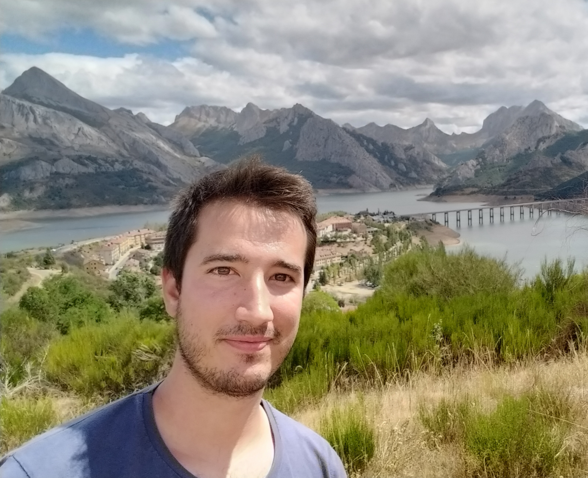
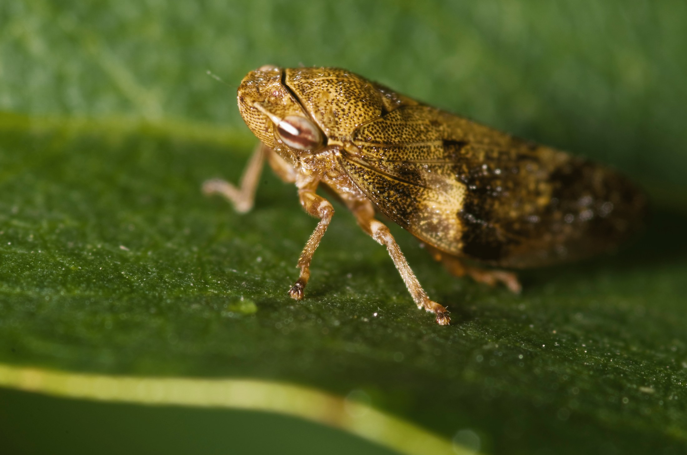

2026
Ecological networks balance connectivity with flexibility to perturbations
bioRxiv preprint
Theoretical & computational ecologist
I study how ecological systems respond to environmental change and perturbations, combining mechanistic models, complex-systems approaches and large-scale ecological data.
Juan de la Cierva Fellow · CEAB-CSIC
Visiting researcher · ISEM, University of Montpellier

Research
Four connected research programmes, from mathematical mechanisms to global ecological observation.

Climate-driven disease
I combine mechanistic epidemiological models with climate and geospatial data to understand when vector-borne plant diseases can establish, spread and become a management concern.
Explore this research →Stability & resilience
Recent work links demographic and network structure to stability, response diversity and vulnerability under different perturbation regimes.
Explore this research →
Spatial ecology
From coral-reef geometry to seagrass fragmentation and dryland vegetation, I study whether spatial organization reveals general ecological processes and resilience.
Explore this research →Selected publications
A curated selection from the complete publication record.
bioRxiv preprint
Global Change Biology Communications
Ecology Letters
Tools & data
Interactive resources that connect models and data to questions outside the analysis pipeline.
Interactive risk atlas
Explore climatic suitability and epidemic risk for Pierce’s disease of grapevines across spatial scales.
Open tool ↗
Decision-support tool
Predict egg hatching of Philaenus spumarius using a degree-day model.
Open tool ↗
Ecological dashboard
A scientific dashboard developed as part of my research software and web-tool portfolio.
Open tool ↗